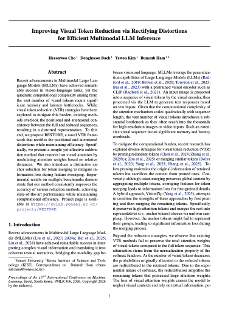

Improving Visual Token Reduction via Rectifying Distortions for Efficient Multimodal LLM Inference
ICML 2026

Abstract
Recent advancements in Multimodal Large Language Models (MLLMs) have achieved remarkable success in vision-language tasks, yet the quadratic computational complexity arising from the vast number of visual tokens incurs significant memory and latency bottlenecks. While visual token reduction (VTR) strategies have been explored to mitigate this burden, existing methods overlook the positional and attentional consistency between the full and reduced sequences, resulting in a distorted representation. To this end, we propose RESTORE, a novel VTR framework that rectifies the positional and attentional distortions while maintaining efficiency. Specifically, we present a simple yet effective calibration method that restores lost visual attention by modulating attention weights based on relative distances. We also introduce a distinctive anchor selection for token merging to mitigate information loss during feature averaging. Experimental results on multiple benchmarks demonstrate that our method consistently improves the accuracy of various reduction methods, achieving state-of-the-art performance while maintaining computational efficiency.
Results

Comparison of average attention proportions assigned to visual tokens within the LLM (a) when the query is a visual token and (b) when the query is a text token.

Comparison with VTR methods for LLaVA-1.5-7B on 8 benchmarks and the average score across them. For baselines, all experiment results are re-implemented from their official codebases under the same environments. Best results at each reduction ratio in Bold.
Paper
|
 |
H. Cho, D. Baek, Y. Kim, and B. Ham Improving Visual Token Reduction via Rectifying Distortions for Efficient Multimodal LLM Inference In International Conference on Machine Learning (ICML) , 2026 [arXiv] [Code] |
Acknowledgements
This work was partly supported by Institute of Information & Communications Technology Planning & Evaluation (IITP) grant funded by the Korea government (MSIT) (No.RS-2022-00143524, Development of Fundamental Technology and Integrated Solution for Next-Generation Automatic Artificial Intelligence System, No.RS-2025-09942968, AI Semiconductor Innovation Lab (Yonsei University)), the National Research Foundation of Korea (NRF) grant funded by the Korea government (MSIT) (RS-2025-02216328), and the KIST Institutional Program (Project No.2E33001-24-086).